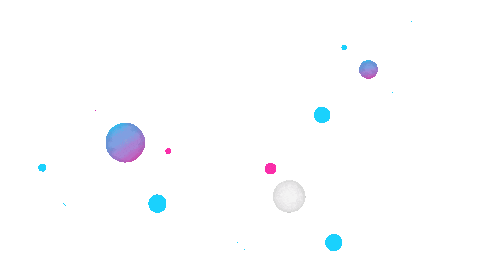
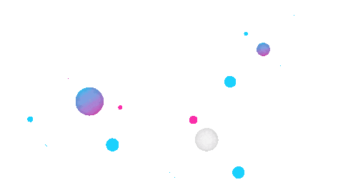
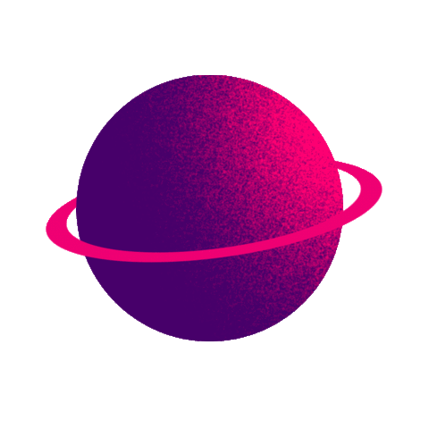
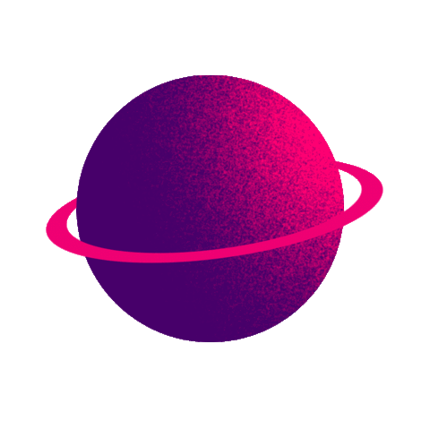

 



Impegnato sentimentalmente con stackoverflow
console.log('ciao');
Andrea Borreca
Junior Web Developer
16-12-1998
Humanbit
I seguenti progetti sono stati ideati e realizzati da Humanbit, io ho solo partecipato allo sviluppo come lavoratore dipendente.
Dotstay - Mappa interattiva
ReNudo - Carrello
Personali
Progetti che porto avanti per divertimento.